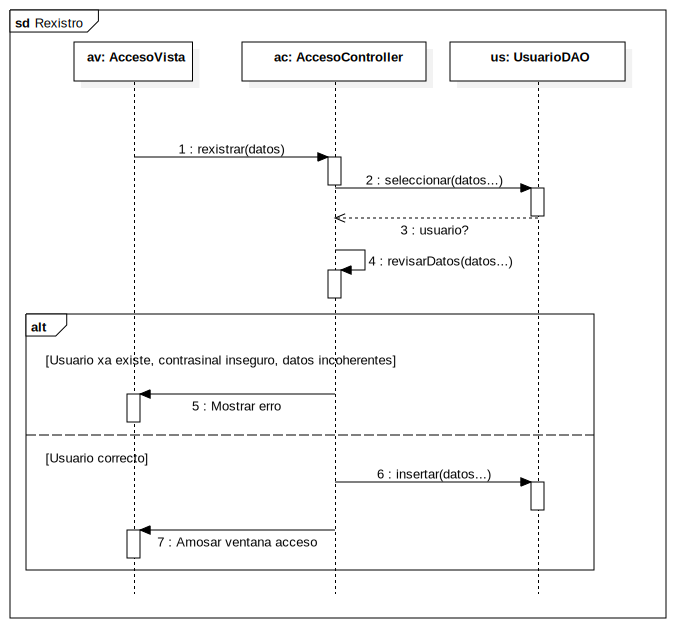

Interaction1
UMLInteraction
ESaude
::
Diagramas de Secuencia
::
Rexistro de usuario
::
Interaction1
Description
none
Diagrams

Rexistro
Fragments
(CombinedFragment)
Participants
ac: AccesoController
us: UsuarioDAO
av: AccesoVista
Messages
rexistrar (av→ac)
seleccionar (ac→us)
usuario? (us→ac)
revisarDatos (ac→ac)
Mostrar erro (ac→av)
insertar (ac→us)
Amosar ventana acceso (ac→av)
Properties
Name
Value
name
Interaction1
stereotype
null
visibility
public
isReentrant
true
Owned Elements
Rexistro